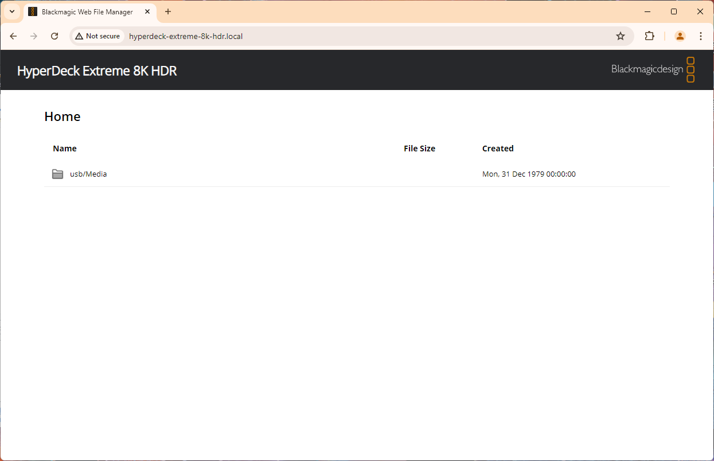

# 5. Media Management
Welcome back! Now that we're controlling our devices over the network, it's time
to see what we've recorded and get media from the camera and HyperDeck. But, since
taking the physical media from the camera might be inconvenient or impossible, let's
download it to our computer over the network.
## Web Media Manager
If you noticed, in **Blackmagic Camera Setup** and **Blackmagic HyperDeck Setup**, we enabled
the "Web Media Manager" and there is a URL listed for it. If we open this in our browser
(which is okay to do even if the browser complains about security), we see the following:

The Web Media Manager
Using this web page, which is hosted on the device itself, we can download, upload, and organize media
on any of the device's connected drives from any computer on the network. It's really convenient to download
camera originals without having to move any cards or drives, all on your local network without being impacted by
internet speeds which might have slowed down a transfer over the cloud.
## SMB
For even more file-transfer and file-organizing power, we can access a Camera's contents over SMB (HyperDecks do not support SMB as of July 2024).
SMB is Windows's native network file sharing protocol, and it is supported by Linux and macOS as well. To connect to
a Blackmagic device over SMB, connect to it the same way you would any other network-attached-storage. (If you need, [here are instructions for connecting to an SMB server](https://knowledgebase.45drives.com/kb/kb450446-connecting-to-smb-share-on-windows-and-macos/).)
The devices might even show up in File Explorer or Finder automatically, making the process even easier.
If prompted for a login, just connect as a guest. You can configure the security and login information in **Blackmagic Camera Setup**.
> username: `guest`
> password: `guest`
## FTP
FTP is another **F**ile **T**ransfer **P**rotocol. You can also connect with File Explorer or Finder, as well as dedicated FTP clients.
HyperDecks support FTP, and you can access them through File Explorer or Finder with their FTP address (`ftp://`).
Both FTP and SMB come with pros and cons, as well as security considerations. **Do not** open or expose any network ports to the open internet without taking _additional_
security precautions. Open ports are scanned for all the time, and there is no security on BMD devices to stop bad actors from uploading malicious files to your
device or the rest of your network.
If you do want to access these files over the internet, consider solutions like a secure VPN connection to the network where your BMD devices are shared, or services like
Google Drive or Blackmagic Cloud that can securely sync files over the internet.
## Transport and Media Control API Calls
In [Part 3](3-PUT-Requests.html), we already learned how to make cameras and HyperDecks record using the `/transports/0/record` endpoint.
What other playback controls do we have access to?
### Play/Stop
Sending a `PUT /transports/0/play` command mimics the behavior of pressing the play button on your device.
It puts the device into playback mode and starts playing a clip. (If you are currently recording on your device,
sending a `play` command will return a `400: Bad Request` error.) Options for this behavior can be accessed via
the `/transports/0/playback` endpoint. Let's try it out:
```JS
// Assume HD is a BMDevice object for the HyperDeck we're connected to
HD.GETdata("/transports/0/playback");
```
returns the JSON Object:
```JSON
{
"loop": false,
"position": 0,
"singleClip": false,
"speed": 0,
"type": "Play"
}
```
If we want, we can set the HyperDeck to loop the current clip and start playing like so:
```JS
HD.PUTdata("/transports/0/playback",{loop: true, singleClip: true, speed: 1});
```
Want to loop backwards through the whole timeline at half speed?
```JS
HD.PUTdata("/transports/0/playback",{loop: true, singleClip: true, speed:-0.5});
```
And, of course, we can always simply start/stop playback by sending one of these commands:
```JS
HD.PUTdata("/transports/0/play");
HD.PUTdata("/transports/0/stop");
```
Note that these features work on cameras as well.
For more information about advanced HyperDeck transport and media control features, [read the documentation here](https://documents.blackmagicdesign.com/DeveloperManuals/RESTAPIForHyperDeck.pdf?_v=1685602810000).
## Formatting Drives
Using the media control features of the API, we can remotely format drives in a camera or HyperDeck. This involves
a specific set of steps, as described below:
1. Get the name of the current drive from the device's "working set"
2. Get a drive-specific format key from the device
3. Send the format command along with the key, new filesystem, and new volume name.
And, as a function, that looks like:
```JS
// BMDevice.js
// This function formats the media drive at the given index in the device's working set
formatDrive(index, newVolumeName) {
// Fetch the device's working set
let workingSet = this.GETdata("/media/workingset").workingset;
// Get the format key for the indicated drive
let formatKey = this.GETdata("/media/devices/"+workingSet[index].deviceName+"/doformat").key;
// Here, I'm assuming that the drive is able to be formatted as ExFAT.
// Run this command and pick another option if that's not the case:
// let supportedFilesystems = this.GETdata("/media/devices/doformatSupportedFilesystems");
// Format the drive
this.PUTdata("/media/devices/"+workingSet[index].deviceName+"/doformat",{key: formatKey, volume: newVolumeName, filesystem: "ExFAT"})
}
```
## HyperDeck Playlists
A really useful feature of the REST API is timeline control. On cameras and HyperDecks, you can set a custom
order for clips to be played back in, allowing you to queue up media for, say, a live production. Let's look at how to do that.
To get the current timeline, we'll run `GET /timelines/0`:
```JS
HD.GETdata("/timelines/0");
```
Which, in my case, returns the following:
```JSON
{
"clips": [
{
"clipUniqueId": 16,
"frameCount": 10225
},
{
"clipUniqueId": 17,
"frameCount": 535
},
{
"clipUniqueId": 18,
"frameCount": 160
}
]
}
```
This means that the current timeline has three clips with IDs 16, 17, and 18.
To reorder them, we can clear the current timeline and re-add the clips in whatever order we want.
Since these endpoints use the `DELETE` and `POST` methods, I've added a `sendRequest` function to `BMDevice.js`
which is the same as `PUTdata` but with an extra parameter for the method.
```JS
HD.sendRequest("DELETE", "/timelines/0"); // Clear current timeline
HD.sendRequest("POST", {clips: [17, 16, 18]}); // Add clips in new order
```
And now we've got our timeline in a different order!
Now, there's no built-in API endpoint for rebuilding the default timeline once it's deleted. But,
since the HyperDeck rebuilds the timeline after changing media devices, we can just update the current media
device to the same one that's already selected, making the HyperDeck rebuild the timeline.
```JS
// BMDevice.js
rebuildTimeline() {
let activeMedia = this.GETdata("/media/active");
this.PUTdata("/media/active", {workingsetIndex: activeMedia.workingsetIndex});
}
```
Unfortunately, there's no way to get the clip file names over the API. This is possible, however,
over the [HyperDeck Ethernet Protocol](https://documents.blackmagicdesign.com/DeveloperManuals/HyperDeckEthernetProtocol.pdf?_v=1685602810000),
which is not covered by this tutorial series. It has more features, but is harder to write programs and scripts around.
You can find the official Blackmagic tutorial for the HyperDeck Ethernet Protocol [here](https://www.blackmagicdesign.com/developer/products/hyperdeck/sdk-and-software).
In the next article, we'll learn how to subscribe to WebSocket events so that we can store and synchronize the current
state of the device!